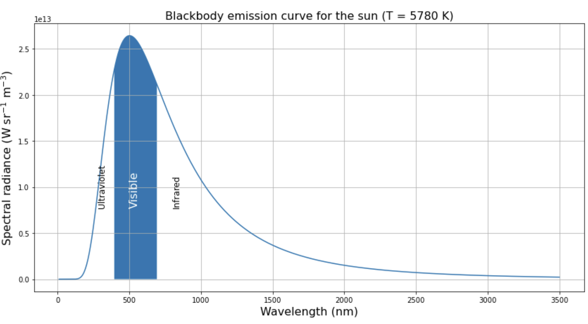
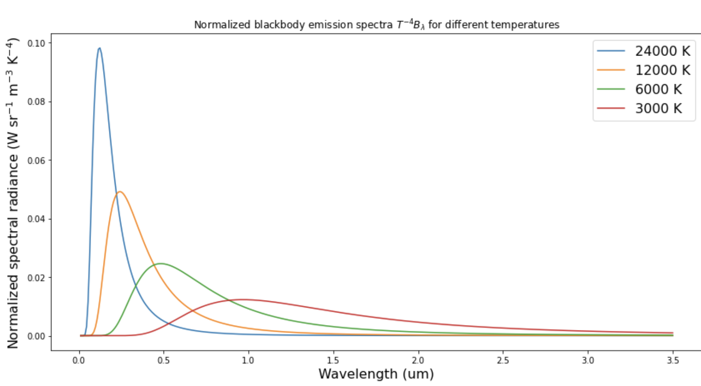
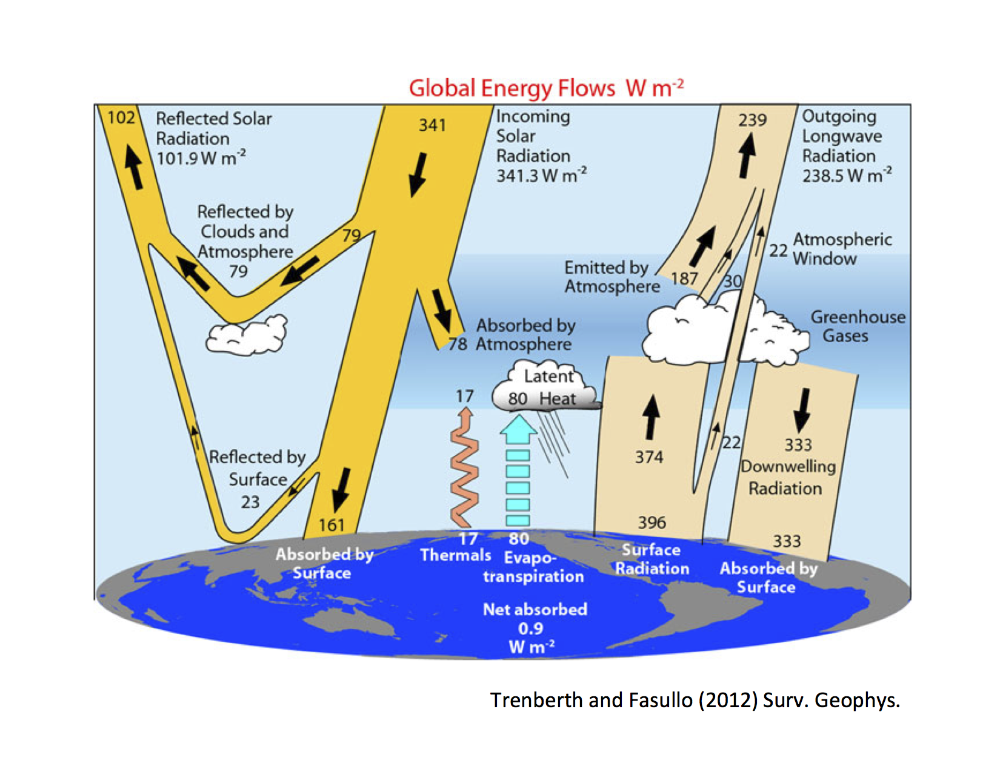
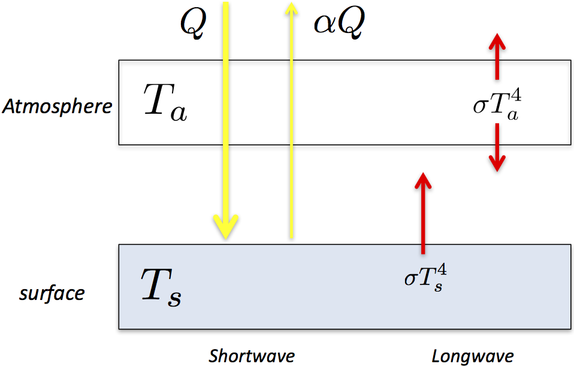
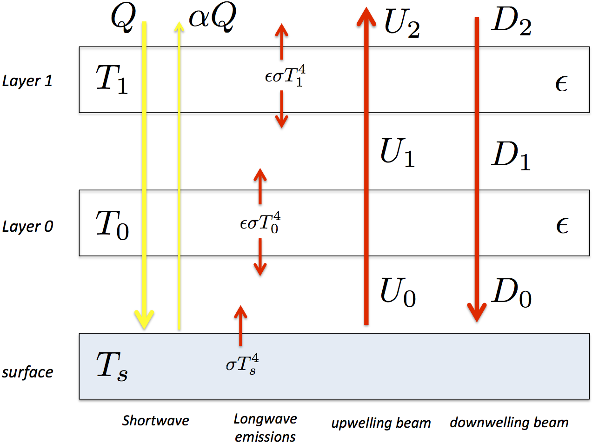
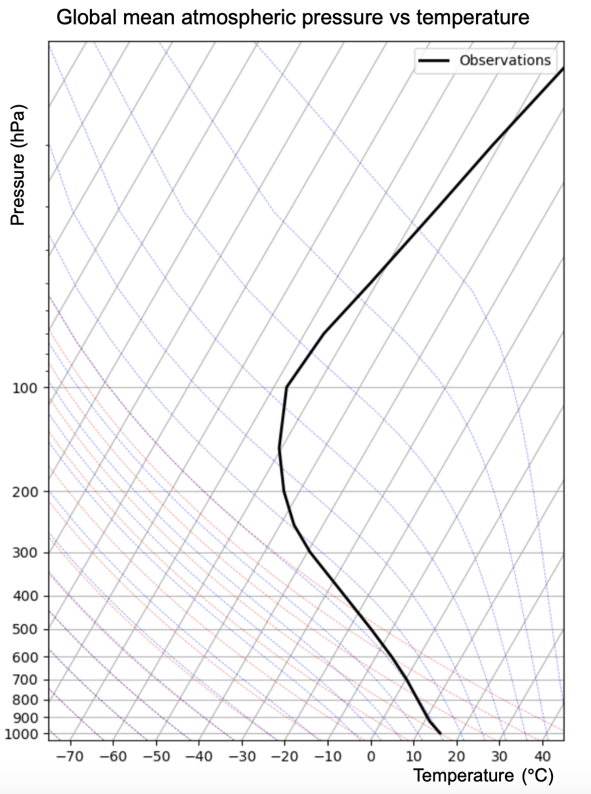
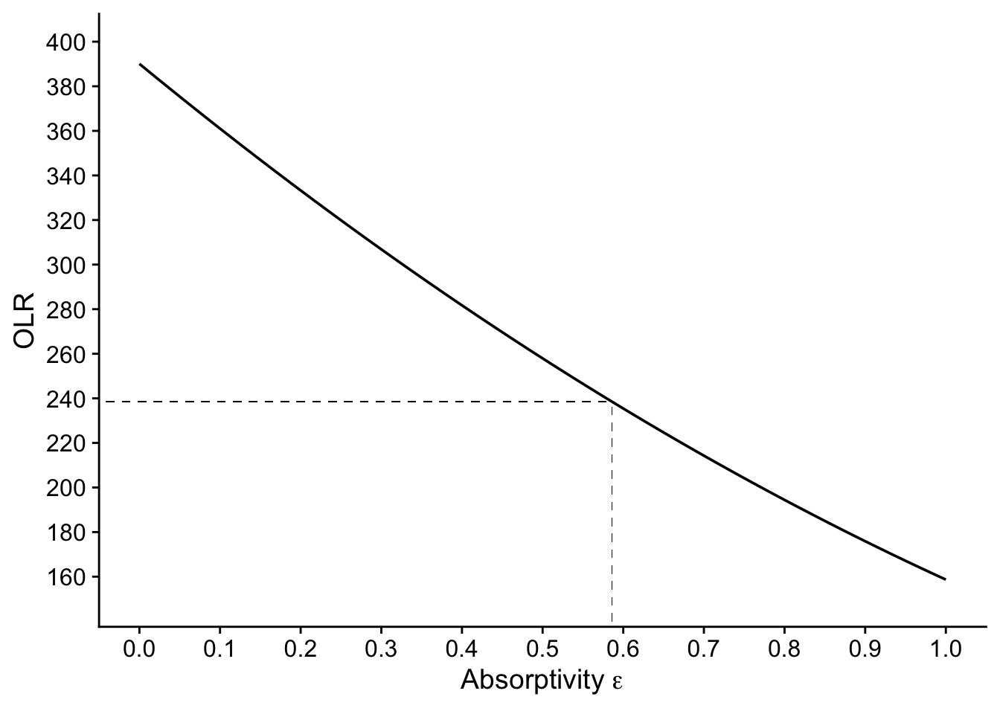

library(tidyverse)
library(here)
library(cowplot())1 Simple Climate Model
1.0.1 A brief review of radiation
All bodies emit radaition across the electromagnetic spectrum. The wavelength of peak intensity is determined by the temperature of the body, as is the total amount of radiation emitted. In fact, the Stefan-Boltzmann law tells us that if a body has a temperature \(T_e\) then
\[ \text{total radiation emitted per square metre of surface} = \sigma T_e^4 \] where \(T_e\) is known as the emission temperatue and \(\sigma\) = 5.67 x 10-8 Wm-2K-4 is the Stefan-Boltzmann constant
- Hotter things emit more radiation
- The wavelength of peak intensity is lower for hotter things.
From this we can work out the emission temperature of the earth \(T_e\).
Emission Temperature of the Earth
The basic idea is that Earth is in energy balance — the power it absorbs from the Sun equals the power it radiates back to space (averaged over time).
Incoming solar power absorbed:
The Sun hits a circular cross-section of Earth (area = \(\pi R^2\)), delivering \(S\) watts per square metre. But Earth reflects some of that — the fraction reflected is the albedo α. So the power absorbed is:
\[ S \times \pi R² \times (1 − \alpha) \]
Outgoing thermal radiation:
Earth radiates from its entire surface (area = \(4\pi R^2\)) as a blackbody, following the Stefan-Boltzmann law:
\[ σT_e⁴ \times 4πR² \]
The \(\sigma T_e^4\) part is just the power radiated per square metre by a blackbody at temperature \(T_e\) — this is the Stefan-Boltzmann law, where \(\sigma \approx 5.67 × 10^{-8}\) W/m²/K⁴ is the Stefan-Boltzmann constant.
Setting them equal:
\[ S × πR² × (1 − α) = σT_e⁴ × 4πR² \]
The πR² cancels from both sides, giving:
\[ S(1 − α) = 4σT_e⁴ \]
Rearranging for T_e:
\[ T_e = \left[\frac{ S(1 − α) }{ 4σ }\right]^{1/4} \] The factor of 4 comes from the geometry — Earth intercepts sunlight as a disc but radiates as a sphere, and a sphere has 4× the area of its circular cross-section. It’s essentially averaging the incoming solar intensity over the whole surface.
Putting in numbers, we can find \(T_e\). \(S\), the solar intensity at the top of the Earth’s atmosphere is 1364 W m^2, \(\sigma\) is the Stefan-Boltzmann constant defined above and \(\alpha\), the average albedo of the whole Earth system as seen from space is about 0.3. Hence
$$ \[\begin{align} T_e &= \left[\frac{ S(1 − α) }{ 4σ }\right]^{1/4}\\ &=\left[\frac{ 1364\times(1 − 0.3) }{ 4 \times 5.67\times 10^{-8} }\right]^{1/4}\\ &=255 \text{K} \end{align}\] $$ We note in passing here that the actual average surface temperature of the Earth is somewhat higher than this, at about 288 K.
Solar Radiation

- The spectrum peaks in the visible range
- Most energy is at these wavelengths.
- It is no coincidence that our eyes are sensitive to this range of wavelengths!
- Longer wavelengths are called “infrared”, shorter wavelengths are called “ultraviolet”.
The shape of the spectrum is a fundamental characteristic of radiative emissions (think about the colour of burning coals in a fire – cooler = red, hotter = white)
Theory and experiments tell us that both the total flux of emitted radiation, and the wavelength of maximum emission, depend only on the temperature of the source.
The theoretical spectrum was worked out by Max Planck around the beginning of the 20th century,and is therefore known as the “Planck” spectrum (or simply the black body spectrum).
**Effect on spectrum of change of temperature

Going from cool to warm:
- the total emission increases - hotter things shine more brightly
- maximum emission occurs at shorter wavelengths.
- The integral of these curves over all wavelengths gives us our familiar \(\sigma T^4\)
Mathematically it turns out that
\[ λ_{max} T = \text{constant} \]
(known as Wien’s displacement law).
By fitting the observed solar emission to a blackbody curve, we can deduce that the emission temperature of the sun is about 6000 K.
Knowing this, and knowing that the solar spectrum peaks at 0.6 micrometers, we can calculate the wavelength of maximum terrestrial radiation as
\[ λ_{max}^{Earth} = 0.6 ~ \mu m \frac{6000}{255} = 14 ~ \mu m \]
This is in the far-infrared part of the spectrum.
1.0.2 Global Energy Budget

1.0.3 Outgoing longwave radiation (OLR)
\[ \text{OLR} = \tau\sigma T_s^4 \]
Where \(T_s\) is the globally averaged surface temperature = 288 K, \(\sigma\) is the Stefan-Boltzmann constant = 5.67 x 10-8 Wm-2K-4.
Given that OLR = 239 Wm-2 we find that \(\tau\), the transmissivity of the atmosphere to long wave radiation, is about 0.61:
\[\tau \approx 0.61\]
1.0.4 A one layer atmosphere

1.0.4.1 Assumptons:
- The atmosphere is a single layer of air at temperature \(T_a\)
- The atmosphere is completely transparent to shortwave solar radiation.
- The surface absorbs shortwave radiation \((1-\alpha)Q\) where \(\alpha\) iis the surface albedo.
- The atmosphere is completely opaque to infrared radiation
- Both surface and atmosphere emit radiation as blackbodies (\(\sigma T_s^4, \sigma T_a^4\))
- The atmosphere radiates equally up and down (\(\sigma T_a^4\))
- There are no other heat transfer mechanisms
1.0.4.2 Energy balance for the surface
\[ \begin{split} \begin{align*} \text{energy in} &= \text{energy out} \\ (1-\alpha) Q + \sigma T_a^4 &= \sigma T_s^4 \\ \end{align*} \end{split} \]
The presence of the atmosphere above means there is an additional source term: downwelling infrared radiation from the atmosphere.
We call this the back radiation.
1.0.4.3 Energy Balance for the atmosphere
\[ \begin{split} \begin{align} \text{energy in} &= \text{energy out} \\ \sigma T_s^4 &= A\uparrow + A\downarrow = 2 \sigma T_a^4 \\ \end{align} \end{split} \] which means that
\[ T_s = 2^\frac{1}{4} T_a \approx 1.2 T_a \]
and
\[ T_a^4 = \frac{1}{2}T_s^4 \]
So we have just determined that, in order to have a purely radiative equilibrium, we must have \(T_s > T_a\)
The surface must be warmer than the atmosphere.
1.0.4.4 Solve for the radiative equilibrium surface temperature
Now we can eliminate the term involving \(T_a\) from the surface equation to find
\[ \frac{1}{2} \sigma T_s^4 = (1-\alpha) Q \]
and use the definition of the emission temperature \(T_e\) to write
\[ (1-\alpha) Q = \sigma T_e^4 \]
In fact, in this model, \(T_e\) is identical to the atmospheric temperature \(T_a\) , since all the OLR originates from this layer.
Solve for the surface temperature:
\[ T_s = 2^\frac{1}{4} T_e \]
Putting in observed numbers (that the OLR = 239 Wm-2, from which we deduce that \(T_e\) = 255 K) gives a surface temperature of
\[ T_s = 303\text{K} \]
This model is one small step closer to reality: surface is warmer than atmosphere, emissions to space generated in the atmosphere, atmosphere heated from below and helping to keep surface warm.
1.0.4.5 Why does this model overpredict the surface temperature
Our model now overpredicts the surface temperature by about 15ºC (303 K versus the observed 288 K).
Ideas about why?
Basically we just need to read our list of assumptions above and realize that none of them are very good approximations:
- The atmosphere absorbs some solar radiation.
- The atmosphere is NOT a perfect absorber of longwave radiation
- Absorption and emission varies strongly with wavelength (atmosphere does not behave like a blackbody).
- Emissions are not determined by a single temperature \(T_a\) but by the detailed vertical profile of air temperature.
- Energy is redistributed in the vertical by a variety of dynamical transport mechanisms (e.g. convection and boundary layer turbulence).
1.0.5 The two-layer grey gas model
Let’s generalize the above model just a little bit to build a slighly more realistic model of longwave radiative transfer.
We will address two shortcomings of our single-layer model:
- No vertical structure
- 100% longwave opacity
Relaxing these two assumptions gives us what turns out to be a very useful prototype model for understanding how the greenhouse effect works
1.0.5.1 Assumptions
- The atmosphere is transparent to shortwave radiation (still)
- Divide the atmosphere up into two layers of equal mass (the dividing line for this turns out to be at 500 hPa pressure level)
- Each layer absorbs only a fraction \(\epsilon\) of whatever longwave radiation is incident upon it.
- We will call the fraction the absorptivity of the layer.
- Assume \(\epsilon\) is the same in each layer
This is called the grey gas model, where grey here means the emission and absorption have no spectral dependence (same at every wavelength).
We can think of this model informally as a “leaky greenhouse”.
Note that the assumption that \(\epsilon\) is the same in each layer is appropriate if the absorption is actually carried out by a gas that is well-mixed in the atmosphere.
Out of our two most important absorbers:
- CO2 is well mixed
- H2O is not (mostly confined to lower troposphere due to strong temperature dependence of the saturation vapor pressure).
But we will ignore this aspect of reality for now..
1.0.5.2 Kirchoff’s Law
In order to build our model, we need to introduce one additional piece of physics known as Kirchoff’s Law:
\[ \text{absorptivity} = \text{emissivity} \]
So if a layer of atmosphere at temperature \(\textbf{T}\) absorbs a fraction \(\epsilon\) of incident longwave radiation, it must emit
\[ \epsilon\sigma T^4 \]
both up and down.
1.0.5.3 A sketch of the radiative fluxes in the 2-layer atmosphere

- Surface temperature is \(T_s\)
- Atm. temperatures are \(T_0, T_1\), where \(T_0\) is closest to the surface.
- Absorptivity of atm layers is \(\epsilon\)
- Surface emission is \(\sigma T_s^4\)
- Atm emission is \(\epsilon \sigma T_0^4, \epsilon \sigma T_1^4\) (up and down)
- Absorptivity = emissivity for atmospheric layers
- a fraction \((1-\epsilon)\) of the longwave beam is transmitted through each layer
1.0.5.4 Tracing the upwelling beam of longwave radiation
Let’s think about the upwelling beam of longwave radiation, which we denote \(U\)
1.0.5.5 Surface to layer 0
We start at the surface. The upward flux from the surface to layer 0 is
\[ U_0 = \sigma T_s^4 \]
(just the emission from the suface).
1.0.5.6 Layer 0 to Layer 1
Now following this beam upward, we first recognize that a fraction \(\epsilon\) of this beam is absorbed in layer 0.
The upward flux from layer 0 to layer 1 consists of the sum of two parts:
- The transmitted part of whatever is incident from below (i.e. the part that is not absorbed)
- New upward emissions from layer 0
We can write this upward flux from layer 0 to layer 1 as:
\[ U_1 = (1-\epsilon) \sigma T_s^4 + \epsilon \sigma T_0^4 \]
1.0.5.7 Beyond Layer 1
Continuing to follow the same beam, we follow the same logic! A fraction \(\epsilon\) of \(U_1\) is absorbed in layer 1, and therefore the transmitted part is \((1-\epsilon)U_1\).
Including new emissions from layer 1, the upwelling flux above layer 1 is
\[ U_2 = (1-\epsilon) U_1 + \epsilon \sigma T_1^4 \]
1.0.5.8 Outgoing Longwave Radiation
Since there is no more atmosphere above layer 1, this upwelling beam is our OLR for this model:
\[ \text{OLR} = U_2 = (1-\epsilon) U_1 + \epsilon \sigma T_1^4 \]
which, plugging in the above expression for \(U_1\) works out to
\[ \text{OLR} = (1-\epsilon)^2 \sigma T_s^4 + \epsilon(1-\epsilon)\sigma T_0^4 + \epsilon \sigma T_1^4 \] Here the three terms represent contributions to the total OLR that originate from each of the three levels.
1.0.5.9 Limits of large and small absorptivity/emissivity
Think about the following two questions:
- What happens to this expression if \(\epsilon = 1\)? What does this represent physically?
- What about if \(\epsilon = 0\)?
By allowing the atmosphere to partially absorb emissions from other levels, we now see that the Outgoing Longwave Radiation to space includes emissions from every level - and therefore is affected by temperature at every level!
1.0.6 Tuning the grey gas model to observations
In building our new model we have introduced exactly one parameter, the absorptivity \(\epsilon\) We need to choose a value for \(\epsilon\)
We will tune our model so that it reproduces the observed global mean OLR given observed global mean temperatures
.
1.0.6.1 Global Mean Air Temperature Observations.
To get appropriate temperatures for \(T_s\), \(T_0\), amd \(T_1\) we use data from NOAA that we present here a global, annual mean lapse rate plot from NCEP Reanalysis data. This type of plot, where temperature (in ce;sius) is plotted along the horizontal axis) and pressure in hPa is plotted along the vertical axis) is often called a skew-T plot.

From. this we see that the surface temperature (at P = 1000 hPa) is about 288 K:
\[ T_s=288K \]
and can make reasonable estimates for \(T_0\) and \(T_1\):
\[ T_0 = 275K \]
This is the average temperature for the layer between 1000 and 500 hPa.
and
\[ T_1 = 230 K \]
This is average temperature for the layer between 500 and0 hPa.
1.0.6.2 OLR
From measurement, it is found that
\[ OLR = 238.5 \ \text{Wm}^{-2} \]
1.0.6.3 Solving for \(\epsilon\)
The OLR formula for the leaky greenhouse that we derived above is
\[ \text{OLR} = (1-\epsilon)^2 \sigma T_s^4 + \epsilon(1-\epsilon)\sigma T_0^4 + \epsilon \sigma T_1^4 \]
1.0.6.4 Solve this equation graphically
We need to do the following:
Write an R function that implements this formula The function should accept four input parameters: * The three temperatures \(T_s\), \(T_0\), and \(T_1\) * The emissivity \(\epsilon\)
Using this function, make a graph of OLR vs \(\epsilon\) for the observed temperature values \(T_s = 288\text{ K}, T_0 = 275\text{ K}\) and \(T_1 = 230\text{ K}\)
For the graph, \(\epsilon\) should range between 0 and 1.
From your graph, find the approximate value of \(\epsilon\) that gives \(OLR = 238.5\)
The function:
OLR<-function(epsilon, Ts, T0, T1){
sigma <- 5.67e-8
OLR <- (1-epsilon)^2 * sigma * Ts^4 + epsilon * (1-epsilon) * sigma * T0^4 + epsilon * sigma * T1^4
return(OLR)
}Set the values and create a data frame of OLRs vs epsilon in the range epsilon from 0 to 1
Ts <- 288
T0 <- 275
T1 <- 230
epsilons <- seq(0,1,0.01) # generates a vector 0.00, 0.01, 0.02,....0.99, 1.00
OLRs <- OLR(epsilons, Ts, T0, T1) # for each value in epsilons, calculates the OLR
df <- tibble(epsilon = epsilons, OLR = OLRs) # combine to a data frame (ggplot needs data frames as input)Plot these data:
df |>
ggplot(aes(x = epsilon, y = OLR)) +
geom_line() +
labs(x = bquote("Absorptivity"~epsilon),
y = "OLR") +
scale_x_continuous(limits=c(0,1), breaks=seq(0,1,0.1)) +
scale_y_continuous(limits=c(150,400), breaks=seq(160,400,20)) +
geom_segment(x=-0.1,y=238.5,xend=0.586,yend=238.5,linetype="dashed",linewidth=0.1) +
geom_segment(x=0.586,y=140,xend=0.586,yend=238.5,linetype="dashed",linewidth=0.1) +
theme_cowplot()
From which we could, with some work, determine that \(\epsilon \approx 0.586\)
This is the absorptivity that guarantees that our model reproduces the observed OLR given the observed temperatures.